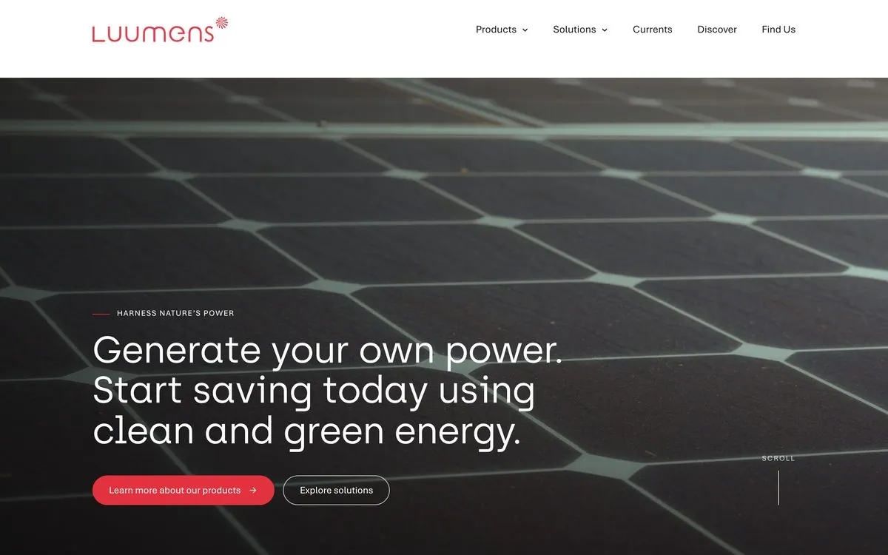

Web design & development
Singapore → Worldwide
Taking freelance projects
Independent web designer & developer in Singapore — premium design, engineered properly.
For restaurants, lifestyle brands and established companies.

Selected work.
2025 — now · Designed & built by Noah
01
 02
03
02
03

Ganko.sg
A restaurant's first website — the story from Osaka to the Singapore interior.
Read the case study →Luumens
An energy brand's site, reworked for flow — with a bento product page.
Read the case study →
Voyagaer
Marine equipment, with every product spec laid out in tabs.
Read the case study →What I do.
Design + build, one person- 1
New website
From first sketch to a launched site, for businesses that need a proper online presence.
→ - 2
Redesign
For businesses that have outgrown their site: clearer navigation, better content, consistent on every screen.
→ - 3
Custom front-end
When a template won’t do: hand-coded pages, motion and interactive components.
→ - 4
Ongoing improvements
For a site you already have: new pages, layout and content updates, performance and new features.
→